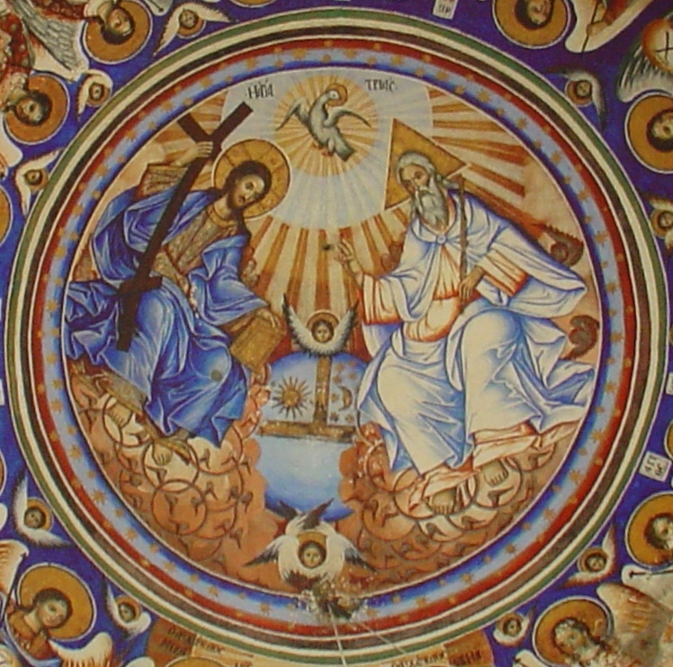
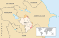
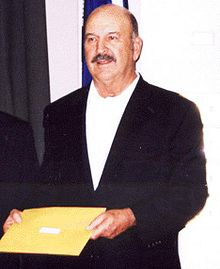

 Filioque (en latín ), que se traduce como «y del Hijo», es una cláusula insertada por la teología cristiana en la versión latina del símbolo niceno-constantinopolitano del Concilio de Constantinopla I del año 381. No está presente en la versión griega, en la que simplemente se lee que el Espíritu Santo procede «del Padre». Se considera que la cláusula Filioque fue insertada en la versión latina del credo niceno-constantinopolitano durante el III Concilio de Toledo en 589 y que se extendió espontáneamente por todo el pueblo franco. En el siglo ix, el papa León III aceptó la doctrina del origen del Espíritu Santo del Padre y del Hijo, aunque se opuso a la adopción de la cláusula Filioque. Sin embargo, en 1014 en Roma, se adoptó el canto del credo con Filioque en la misa.
La posición a favor de la inserción de esta cláusula, llamada filioquismo, se inspiró en la doctrina tradicional de Occidente, así como en la doctrina recogida en Alejandría. Fue proclamado dogma de la Iglesia por el papa León I en 447. En oposición a este dogma se encuentra la doctrina del monopatrismo, formulada por el patriarca de Constantinopla Focio en el siglo ix. Focio sostuvo que la frase «que procede del Padre» (τὸ ἐκ τοῦ Πατρὸς ἐκτορευόμενον) debe ser del credo niceno-constantinopolitano, interpretado en el sentido de «quien procede solo del Padre» (τὸ ἐκ μόνου τοῦ Πατρὸς ἐκπορευόμενον). Esta doctrina fue una de las causas que llevaron al breve cisma de Focio, precedente del Gran Cisma de 1054. Las diferencias entre los defensores de las dos doctrinas constituyen todavía un obstáculo en los intentos de reunir a las Iglesias católica y ortodoxa.

Pandemia de COVID-19
Conflicto del Alto Karabaj (en la imagen)
Incendios en el Oeste de Estados Unidos
5-10 de octubre: Grandes Ligas de Béisbol
2-11 de octubre: Finales de la WNBA
30 de septiembre-13 de octubre: Finales de la NBA
27 de septiembre-11 de octubre: Torneo de Roland Garros

5 de octubre: Rolando Campbell, futbolista colombiano (59)
5 de octubre: Esteban Bocaranda, político y abogado venezolano (62)
4 de octubre: Richard Schifter, abogado y diplomático estadounidense (97)
4 de octubre: Pradeep Maharathy, político indio (65)
El político estadounidense Mike Foster
4 de octubre: Mike Foster, político estadounidense (90; en la imagen)
4 de octubre: Juan Serrano Muñoz, arquitecto y pintor español (91)
4 de octubre: Armelia McQueen, actriz estadounidense (68)
4 de octubre: Kenzō Takada, diseñador de moda japonés (81)
3 de octubre: Thomas Jefferson Byrd, actor estadounidense (70)
3 de octubre: Anthony Galindo, cantante y modelo venezolano (45)
3 de octubre: Rosendo Huenumán, político y dirigente social chileno (85)